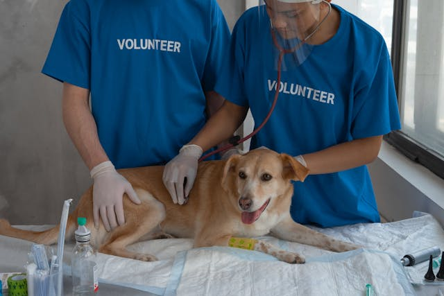

Projetos Sociais Quatro Patas
Nossos projetos sociais são movidos pelo amor e respeito á vida animal, propondo-se transfomar a vida de cães e gatos e consientizando sobre a adoção responsável.
Multirões
Serviços de castrações, atendimentos e orientações para garantir mais saúde totalmente gratuitos. Locais e horários saão informados nas redes sociais
Feiras de Adoção
Adotar um animal é um gesto de amor e empatia que tranforma vidas - a do animal e sua. Dê uma oportunidade. Adote. Tranforme uma vida e permita que a sua seja transfomada para melhor.
AdoçãoMultirões
Serviços de castrações, atendimentos e orientações para garantir mais saúde totalmente gratuitos.
Saúde PúblicaDoações
Você também pode nós ajudar fazendo doações financeiras ou de materias essenciais, o que nos ajuda nos nossos resgates e outrous gastos como na compra de ração, medicamentos e veterinários.
- contato@ongquatropatas.org.com
- Banco: Exemplo (0000)
- Conta Corrente: 12345-0
- Agência: 1234
- CNPJ: 00.000.000/0001-00